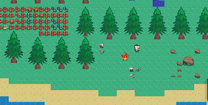
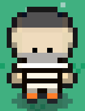

Xentigon Progression
Last updated 9/16
Change Log
Open World Xentigon
I had an idea to make Xentigon open world so you can play gameplay and follow the story line or play open world. In open world you will be able to capture xentians, battle, trade, and more. I have started working on the open world map but am far from done.
Criminals
Criminals Steal your items if you go to talk to them so dont talk to them unless you want items to get stolen.
